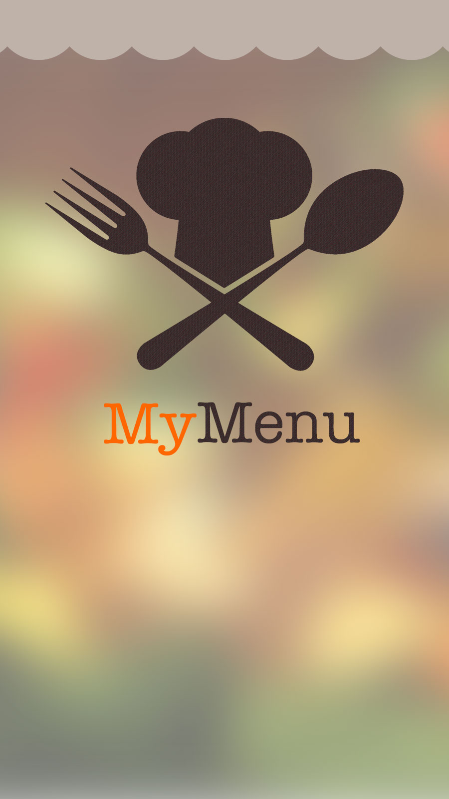

כדי להתחבר לתפריט יש להדליק את הWiFi ולהתחבר לרשת של המסעדה. אנא ודאו שהWiFi שלכם דלוק ואתם בטווח של המסעדהלא נמצאה מסעדה בטווח שלכם
מצאנו
{{resturantsWifi.length}} מסעדות
בסביבתכם!
מצאנו מסעדה בסביבתכם!
למסעדת
{{wireless.restName}}
התחברו לרשת
{{wireless.SSID}}
-או-